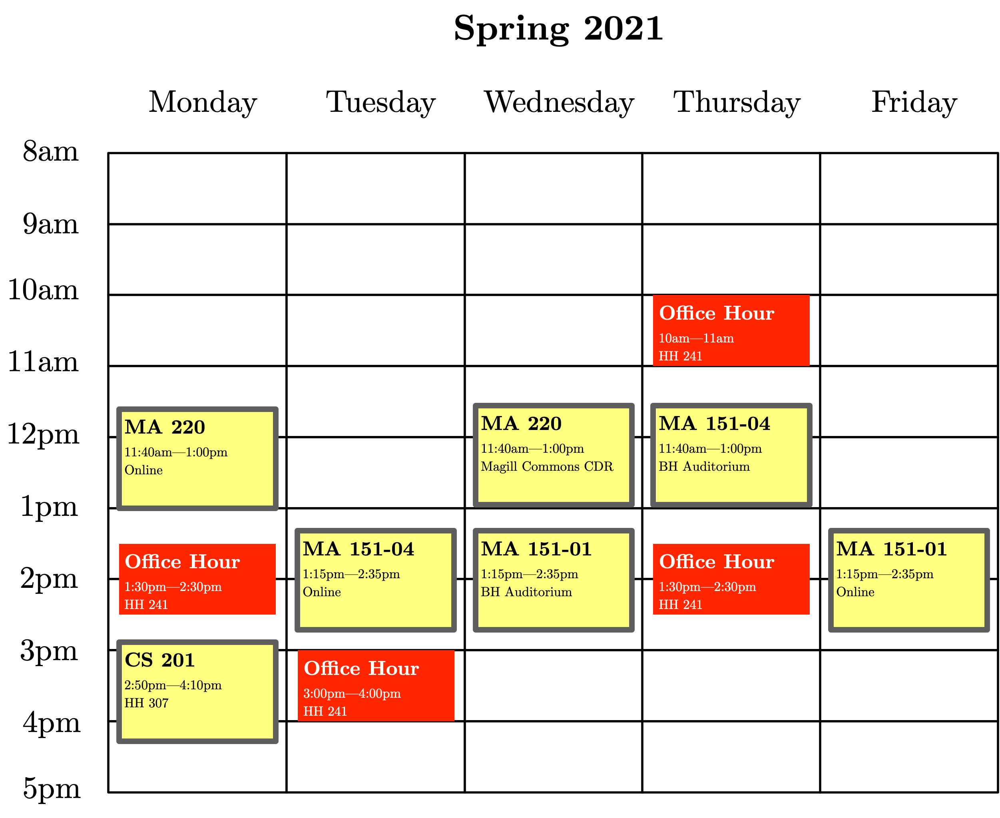

David Darmon
MA 151-04, Statistics with Applications
Spring 2021
Tuesday, 1:15 PM – 2:35 PM, Remote via Zoom
Thursday, 11:40 AM – 1:00 PM, Bey Hall Auditorium
This course covers the process of statistical analysis from beginning to end. That process, in broad strokes, is as follows: we pose a scientific question, determine what experiments or observations might provide data towards answering that question, develop approaches to collecting that data, summarize the resulting data, and derive inferences relevant to the original scientific question. In the process, you will learn about sampling, descriptive statistics, probability, probability models, inferential statistics, confidence intervals, hypothesis tests, and regression. You will also learn how to analyze data using R, a programming language ideally suited for statistical computing.
Prerequisites
MA 101 or MA 105 passed with a grade of C- or higher, or Math Placement Level 3 or 4. Not open to computer science majors or to students required to complete MA 125, except software engineering majors.
Professor
| Dr. David Darmon | | ddarmon [at] monmouth.edu |
| | Howard Hall 241 |
Topics, Notes, Readings
This is currently a tentative listing of topics, in order.
- Introduction: What is statistics? What types of questions can statistics answer? Types of data.
- Descriptive statistics for quantitative data: Summaries of the entire data distribution: rug plot, dot plot, histogram, box plot. Measures of center: mean, median, mode. Measures of variation: range, standard deviation, quartiles.
- Descriptive statistics for two quantitative variables: Scatterplots. Trendlines to summarize an association. Regression. Correlation.
- Descriptive statistics for categorical data: Two-way tables. Marginals and conditionals of two-way tables. Lurking variables and confounding via three-way tables.
- Origins of data: Experimental versus observational studies. Causation versus association. Methods of data collection and biases in data collection.
- Probability: The origin of probability in games of chance. The interpretation of probability. Probabilities from random sampling of a two-way table. Probabilities from Venn diagrams.
- Random variables: Random variables as 'numbers that could have been otherwise.' Random variables as an idealization of the data collection process. Relationship between random variables and histograms / density plots.
- The normal distribution: The normal distribution and its properties. The normal distribution as an idealized model for a population distribution. Putting a population variable on a standard scale. Probabilities and quantiles for normally distributed populations.
- Sampling distributions: The connection between a population distribution and the distribution of a sample statistic. Statistical properties of the sample mean under simple random sampling. The central limit theorem.
- Confidence intervals: Confidence intervals for population means. Confidence intervals as interval estimators. The interpretation of confidence intervals. Using confidence intervals to distinguish between practical and statistical significance.
- Hypothesis tests: Hypothesis tests for population means. Components of a hypothesis test. Types of error in hypothesis testing. Scientific hypotheses and statistical hypotheses. Statistical significance and practical significance. P-values.
- Confidence intervals and hypothesis tests for two-sample problems: Two-sample tests for population means and their associated confidence intervals. One-sample and two-sample tests for population proportions. Tests for independence and homogeneity using two-way tables.
- Correlation and regression: Simple linear regression. Interpretation of regression coefficients in the context of a population. Diagnostic plots and model checking for simple linear regression. Statistical properties of estimates of regression coefficients. Hypothesis tests and confidence intervals for population regression coefficients.
- Analysis of Variance: One-way ANOVA. Relationship of one-way ANOVA to the two-sample \(t\)-test. The problem of multiple comparisons. Diagnostic plots for one-way ANOVA. Contrasts from one-way ANOVA.
- Nonparametric tests for population means: Violations of the distributional assumptions of \(t\)-tests and ANOVA. Rank-based test statistics. Mann-Whitney-Wilcoxon test for two independent samples. Kruskal-Wallis test for one-way ANOVA.
See the end for the current lecture schedule, subject to revision. Homework and additional resources will be linked there, as available.
Course Mechanics
Office Hours
| Monday, 01:30—2:30 PM | Howard Hall 241 |
| Tuesday, 03:00—04:00 PM | Howard Hall 241 |
| Thursday, 10:00—11:00 AM | Howard Hall 241 |
| Thursday, 01:30—02:30 PM | Howard Hall 241 |
Or graphically:

I will be available for office hours both in-person and on Zoom. For in-person office hours, please email me to make an appointment during one of the times above.
If you are struggling with the homework, having difficulty with exams, or just want to chat, please visit me during my office hours. I am here to help.
Grading Policy
Your final grade will be determined by:
- 60% for 3 in-class exams (20% each)
- 25% for a non-cumulative final exam
- 10% for homework problem sets
- 5% for class participation
I will use the standard 10-point breakdown to assign letter grades to numerical grades:
- \([90, 100] \to \text{A}\)
- \([80, 90) \,\,\, \to \text{B}\)
- \([70, 80) \,\,\, \to \text{C}\)
- \([60, 70) \,\,\, \to \text{D}\)
- \([0, 60) \,\,\,\,\,\, \to \text{F}\)
with pluses and minuses assigned by dividing the intervals into thirds.
Homework
Homework will be assigned at the end of every class meeting, and listed on the Sapling page for this course. Homework assignments are due at the beginning of the next class meeting.
Attendance
Required. If you expect to miss 2-3 sessions of the course, you should take the course during another semester.
Class Participation
You are expected to actively participate during each lecture. This includes responding to questions I pose to the class, as well as raising additional questions you may have as I present the material. I will regularly call on both volunteers and non-volunteers and you are expected to either attempt to answer the question or explain your current confusion.
Zoom
We will use Zoom for our remote meetings. During a remote meeting, try to make your surroundings conducive to learning: find a quiet place, close applications and windows on your computer unrelated to class, and clear your work area of other possible distractions. You are expected to have your camera on during the lecture. You are also expected to have the ability to talk during lecture. Under extenuating circumstances where you are unable to talk, you may interact with the class via the Chat feature in Zoom.
In the event that a quiz or test must be taken remotely, I will provide guidelines for how we will hold the quiz or test over Zoom.
Examination Absences
If you miss an examination your grade will be zero for that exam. If you know you will be absent for an exam you must let me know at least one week in advance to schedule a make-up exam.
Textbook
The required textbook is:
- Brigitte Baldi and David S. Moore, The Practice of Statistics in the Life Sciences, 4th Edition (W. H. Freeman and Company, 2018, ISBN: 9781319013370).
Collaboration, Cheating, and Plagiarism
All submitted work should be your own. You are welcome and encouraged to consult with others while working on an assignment, including other students in the class and tutors in the Mathematics Learning Center. However, whenever you have had assistance with a problem, you must state so at the beginning of the problem solution. Unless this mechanism is abused, there will be no reduction in credit for using and reporting such assistance. This policy applies to both individual and group work. In group work, you only need to acknowledge help from outside the group. This policy does not apply to examinations.
Statement on Special Accommodations
Students with disabilities who need special accommodations for this class are encouraged to meet with me or the appropriate disability service provider on campus as soon as possible. In order to receive accommodations, students must be registered with the appropriate disability service provider on campus as set forth in the student handbook and must follow the University procedure for self-disclosure, which is stated in the University Guide to Services and Accommodations for Students with Disabilities. Students will not be afforded any special accommodations for academic work completed prior to the disclosure of the disability, nor will they be afforded any special accommodations prior to the completion of the documentation process with the appropriate disability office.
School of Science Commitment to Equity and Inclusion
The School of Science does not discriminate based on race, gender, ethnicity, sexual orientation, or religion. We strive to create a learning environment that allows everyone to succeed and grow. Towards that end, we are here to assist you in any way we can. Should you experience any difficulties or challenges due to discriminatory or harassing behaviors of any sort in your classes, please know that many people are available to help. You can contact your professor, your academic advisor, the department chair, or any of the Deans (Dean Bachrach, Associate Dean Duckett and Assistant Dean Tiedemann) by email or phone or to meet in person by appointment. There are also resources available in the larger University community including the Office of Equity and Diversity and the Intercultural Center.
COVID-19 and In-person Meetings
During the COVID-19 pandemic, it is critically important that we care for ourselves and each other by taking strict measures to avoid spreading SARS-CoV-2. It is therefore a requirement that face masks are worn properly and appropriate physical distancing is maintained at all times during all classes.
When entering a room, please pick up disinfectant wipes and move as far into the classroom as possible in order to help maintain physical distances. Similarly, leave the room in an orderly fashion and dispose of the wipes on the way out.
Students should wipe down their desktops upon arrival.
Students are expected to wipe down keyboards and monitors with disinfectant wipes (provided) both before and after use.
For further information about COVID-19-related policies, please refer to the Student Handbook.
FERPA Video Prohibition
Under the Family Educational Rights and Privacy Act (FERPA), your education records as a student are confidential and protected. Under most circumstances your records will not be released without your written and signed consent. Part of a student's protected and confidential education records include video and / or audio recordings of students within the classroom. As such, students are strictly prohibited from video or audio recording distance learning lectures off of any platform utilized by professors (Zoom, Webex, etc.). A prohibited recording includes, but is not limited to recordings using the platform, a cell phone, tablet, video camera, audio capture device, etc. Students may be subject to disciplinary action under the Student Code of Conduct if found to have made any video and/or audio recording distance learning lectures without proper consent.
R
We will use R, a programming language for statistical computing, throughout the semester for in-class activities and homework assignments. I will cover the relevant features of R throughout the course.
You should install R on your personal computer. You can install R by following the instructions for Windows here, for macOS here, or for Linux here. You will also want to install RStudio, and Integrated Development Environment for R, which you can find here.
We will use R as a scripting language and statistical calculator, and thus will not get into the nitty-gritty of programming in R. We will largely use functionality built into the mosaic library in R. You can find a comprehensive tutorial to using R and mosaic here.
Schedule
Subject to revision. Assignments and solutions
will all be linked here, as they are available. All readings are from
the textbook by Baldi and Moore unless otherwise noted.
- January 26, Lecture 1:
- Topics: Introduction to class. What is statistics? Types of data. Visual summaries of data: rug plots, histograms, and densities. Using R to generate visual summaries.
- Sections: Chapter 1
- Assigned Reading and Learning Objectives
- SynthCourseStats.csv file
- January 28, Lecture 2:
- Topics: Numerical summaries of data. Measures of center: mean, median, mode. Measures of spread: standard deviation, percentiles / quantiles, and quartiles. Boxplots.
- Sections: Chapter 2
- Assigned Reading and Learning Objectives
- Demo for Numerical Summaries of Center and Spread
- Lab 1. Due Lecture 3.
- February 2, Lecture 3:
- Topics: Summaries of two quantitative variables. Scatterplots. Including a categorical variable using color. Correlation.
- Sections: Chapter 3
- Assigned Reading and Learning Objectives
- Demo for the Properties of the Sample Correlation
- February 4, Lecture 4:
- Topics: Summaries of two quantitative variables. Trendlines as a data summary device. Refresher on the equation of a line: \(y = mx + b\). Trendlines and interpreting the slope and intercept. Trendlines as a prediction.
- Sections: Chapter 4
- Assigned Reading and Learning Objectives
- Demo for Refresher on Equation of a Line
- February 9, Lecture 5:
- Topics: Summaries of two categorical variables. Two-way tables. Marginals of a two-way table. Conditionals of a two-way table. Lurking variables and confounding via a three-way table.
- Sections: Chapter 5
- Assigned Reading and Learning Objectives
- February 11, Lecture 6:
- Topics: Where do data come from? Experimental versus observational studies. Causation versus association. Methods of data collection. Bias in data collection.
- Sections: Chapter 6
- Assigned Reading and Learning Objectives
- February 16, Lecture 7:
- Topics: Random chance and probability, and their relation to random sampling. Probabilities and their interpretation. Random variables: discrete and continuous. Probability distributions for discrete random variables. Density curves for continuous random variables. Querying probability distributions and density curves to determine the probability that a random variable \(X\) takes a value.
- Sections: Chapter 9
- Assigned Reading and Learning Objectives
- Demo for Simple Random Sampling and Random Variables
- February 18, Lecture 8:
- Topics: Exam 1.
- Sections: Exam on Chapters 1-6
- Exam 1 Study Guide
- February 23, Lecture 9:
- Topics: Normal random variables. A bell-shaped curve. Examples of quantities distributed according to a bell-shaped curve. The mean and standard deviation of a normal distribution. The standard normal distribution via re-centering and scaling. \(Z\)-scores for standardizing bell-shaped data. Probabilities and quantiles for normally distributed data using R.
- Sections: Chapter 11
- Assigned Reading and Learning Objectives
- Demo for Properties of a Normal Distribution
- Demo for Computing Normal Probability Queries Using R
- Practice Computing Normal Probability Queries Using R
- February 25, Lecture 10:
- Topics: Connecting data to statistical models. Populations and samples. Parameters and statistics. The sampling distribution of a statistic. The sample mean. The mean and standard deviation of the sample mean. The central limit theorem.
- Sections: Chapter 13
- Assigned Reading and Learning Objectives
- Demo of a Sampling Distribution via Enumeration
- Demo of the Sampling Distribution of the Sample Mean \(\bar{X}\) Under Random Sampling from a Population
- Age at Time of Death By Current Age and Other Demographics by Kevin Stadler
- March 2, Lecture 11:
- Topics: Estimation of population parameters using a sample statistic. The sample mean as a procedure for estimating the population mean. Standard error of the sample mean. Estimating the standard error of the sample mean. Standardizing the sample mean. \(T\)-scores in place of \(Z\)-scores.
- Sections: Chapter 14, Chapter 17
- Assigned Reading and Learning Objectives
- Homework 10 Additional Problems
- Demo of the "Black Box" Model for Inferential Statistics
- March 4, Lecture 12:
- Topics: Added uncertainty from estimating the standard error. The \(t\)-distribution. Degrees of freedom. \(t\)-values using R. A reasonable guess at the population mean. The \(T\)-based confidence interval for a population mean. Interpreting the confidence level of an interval estimator. How the width of a confidence interval depends on the sample size, precision of measurement, and confidence level.
- Sections: Chapter 14, Chapter 15, Chapter 17
- Assigned Reading and Learning Objectives
- Demo of the Density Curve for the \(t\)-distribution with Varying Degrees of Freedom
- Demo of the Dependence of a Confidence Interval for the Population Mean on \(\bar{x}, s_{X}, n\) and \(c\)
- Demo on Interpretation of the Confidence Level of an Interval Estimator
- March 9, Lecture 13:
- Topics: Hypothesis testing. Making a claim about a population parameter. Identifying the null and alternative hypothesis based on the claim. Statistical hypotheses are always about populations.
- Sections: Chapter 14, Chapter 17
- Assigned Reading and Learning Objectives
- Homework 12 Additional Problems
- Demo on the Rationale Behind Using a \(T\)-score to Test a Claim About a Population Mean
- March 11, Lecture 14:
- Topics: Exam 2.
- Sections: Exam on Chapters 9, 11, 13, 14, and 17
- Exam 2 Study Guide
- March 16, Lecture 15:
- Topics: Hypothesis testing. Types of errors in hypothesis testing. The logic of hypothesis testing: all is fair in law and war. How likely is the observed result when the null hypothesis is true? Rejection regions for the one-sample \(t\)-test.
- Sections: Chapter 14, Chapter 15, Chapter 17
- Assigned Reading and Learning Objectives
- Homework 13
- Demo of Rejection Regions and \(P\)-values for a One-sample \(t\)-test
- March 18, Lecture 16:
- Topics: Hypothesis testing using \(P\)-values. Hypothesis testing using confidence intervals. The one-sample \(t\)-test using R. Practice with the one-sample \(t\)-test.
- Sections: Chapter 17
- Assigned Reading and Learning Objectives
- Statistical Inference Worksheet. Due on eCampus by the beginning of Lecture 17.
- Demo of Sampling Distributions of the \(T\)-statistic Under the Null and Alternative Hypotheses
- March 23, Lecture 17:
- Topics: Statistical hypotheses about two population means. Differences between population means. Unmatched populations. Estimating differences between populations with independent samples. Confidence intervals for differences of unmatched population means. The unpaired (independent) two-sample \(t\)-test.
- Sections: Chapter 18
- Assigned Reading and Learning Objectives
- March 25, Lecture 18:
- Topics: Matched populations. Estimating differences between matched population means using average difference scores. Confidence intervals for differences of matched population means. The paired two-sample \(t\)-test. Reminder of the assumptions of \(T\)-based inferential procedures. Diagnosing violations of Normality assumptions: density plots, Q-Q plots, and formal hypothesis tests. The perils of Normality testing.
- Sections: Chapter 11, Chapter 17
- Assigned Reading and Learning Objectives
- Demo of Normality Diagnostics
- March 30, Lecture 19:
- Topics: Rank-based methods for testing population centers. Rank-based methods for one-sample and two-sample problems.
- Sections: Chapter 27
- April 1, Lecture 20:
- Topics: Exam 3.
- Sections: Exam on Chapters 14, 15, 17, and 18
- Exam 3 Study Guide
- April 6, Lecture 21:
- Topics: Parametric one-way ANOVA. Nonparametric one-way ANOVA.
- Sections: Chapter 24, Chapter 27
- April 8, Lecture 22:
- Topics: Hypothesis testing for categorical data in one-way tables. Statistical hypotheses about categorical data. The \(\chi^{2}\) (chi-squared) statistic for testing claims about categorical data.
- Sections: Chapter 21
- April 13, Lecture 23:
- Topics: Hypothesis testing for categorical data in two-way tables. Independence and association between two categorical variables. Tests of association between two categorical variables using the chi-squared statistic. Tests of association between two categorical variables using Fisher's exact test.
- Sections: Chapter 22
- April 15, Lecture 24:
- Topics: Inferences about proportions for binary outcomes in two populations. Binary variables and binomial counts. Binomial proportions. Relative risks, odds, and odds ratios. Interpreting relative risks and odds ratios. Not interpreting the odds ratio as a relative risk. Confidence intervals for the relative risk and the odds ratio.
- Sections: Chapter 9, Chapter 20
- April 20, Lecture 25:
- Topics: Statistical association between two quantitative variables. Simple linear regression. The simple linear regression model. The population intercept and slope. Assumptions of the simple linear regression model. Checking the validity of the simple linear regression model with diagnostic plots.
- Sections: Chapter 23
- April 22, Lecture 26:
- Topics: The \(T\)-statistic for the sample slope. The estimate of the standard error of the sample slope. Confidence intervals for population slopes. Hypothesis tests for population slopes.
- Sections: Chapter 26
- May 4, Final Exam:
- Time: 11:35 AM - 2:25 PM
- Location: Bey Hall Auditorium